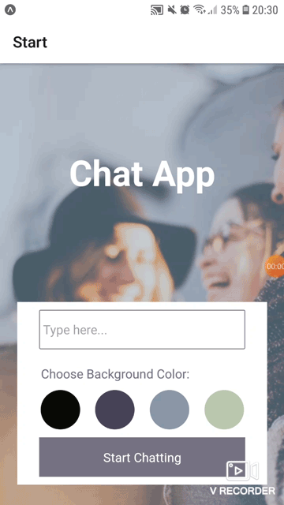
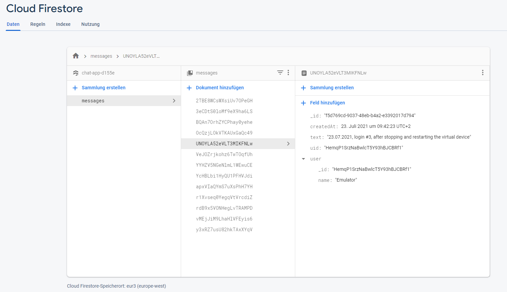
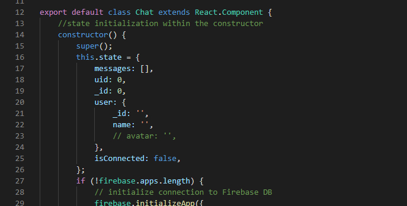
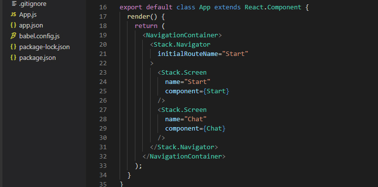

Chat App
Case Study
Über das Projekt
Chat-App für Mobilgeräte auf Basis von React Native. Die App bietet Nutzern eine Chat-Oberfläche sowie die Möglichkeit, Bilder und den eigenen Standort zu teilen.
Ziel
Nutzer können Bilder teilen (ein Foto aufnehmen oder eines aus der Medienbibliothek auswählen), sobald sie der App Zugriff auf ihre lokale Medienbibliothek und die Kamera gewähren. Die Standortfreigabe wird aktiviert, indem der Nutzer der App die Berechtigung erteilt, auf seine Standortdaten zuzugreifen.

Screenshot der App
Kontext
Die Anwendung entstand im Rahmen des Webentwicklungskurses bei CareerFoundry mit dem Ziel,
Fähigkeiten in React Native sowie in der Speicherung von Nachrichten in Firestore aufzubauen.
Die Aufgabenstellung beschrieb die Funktionen und Anforderungen präzise, und die Übungen waren so
strukturiert, dass sie diesen Vorgaben folgten.

Project brief Careerfoundry (source: Careerfoundry)
Tech Stack
- React Native
- Expo
- Gifted Chat library (chat screen and the chat functionality)
- Firebase (Authenticate users anonymously)
- Firestore Database (Store conversations)
- Store chats locally using asyncStorage

1. Schritt:
Erstellen Sie die Komponenten und die Benutzeroberfläche.
2. Schritt:
Speichere die Nachrichten in Firestore.


